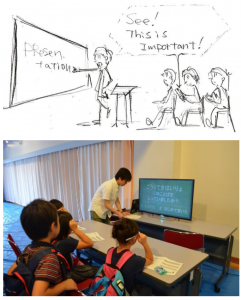
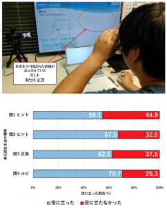
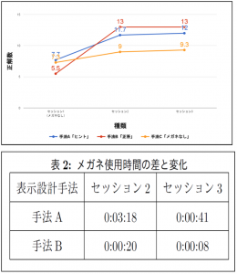
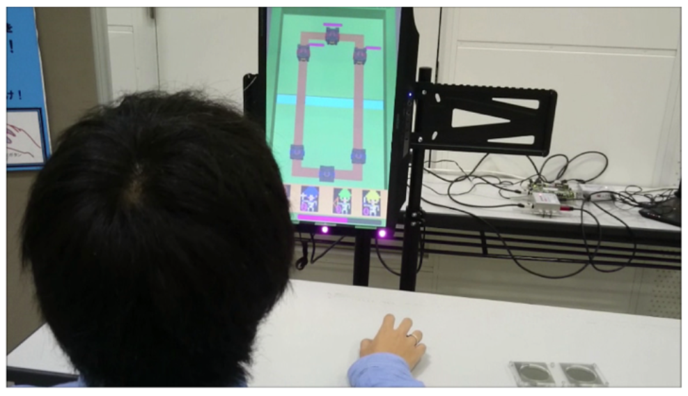
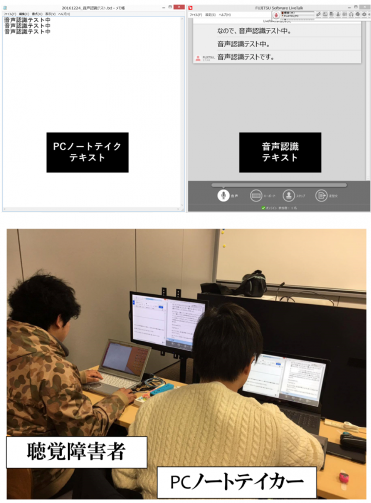
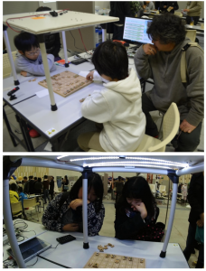

PDF VERSION
[ダウンロードが見つかりません]
平成28年度重点配分経費（研究）成果報告書
多重化による合理的配慮対応・教育用ディスプレイシステムの開発
配分研究費 (700千円) 1ヶ年
研究者名：所属学科 情報メディア学科 氏名：白井暁彦
1. 研究の目的
本研究「多重化による合理的配慮対応・教育用ディスプレイシステムの開発」は．多重化ディスプレイを教育・トレーニング用途に使用する場合の特性を明らかにすることを目的としている．従来の情報保障・情報アクセシビリティの向上といった一方通行の技術から，合理的配慮における障害者と非障害者の平等性，特に演習系講義やグループワークといった同時双方向性の必要となるシチュエーションにおける，複数のソリューションの融合による，あらたなコンセプトの合理的配慮ソリューションを提案する．
2. 研究の必要性及び従来の研究
本研究が実施された2016年4月より，「障害者差別解消法」が施行された．この法律は国連「障害者権利条約」の日本での批准に向けた「障害者基本法」の改正および「障害者差別解消法」による一連の法整備である．障害者差別解消法の理念として，障害(disability)に基づく差別を禁止し，平等な機会，待遇などを保証するなどの「合理的配慮」が提供されることにある．ここでの「合理的配慮」とは「障害者から何らかの助けを求める意思の表明があった場合の，負担になり過ぎない範囲の社会的障壁を取り除くために必要な便宜」と定められており（同法第2条），同様の配慮はアメリカにおいては「リハビリテーション法」で定められており，具体的にICT技術における配慮について条項がある（第508条）．これによると，アメリカ政府機関が所有する電子技術や情報技術は，身体障害を持つものも等しく使えることを条件としており，様々なバリアフリー技術の研究開発や社会展開が望まれている．この法整備によって，義務ないしは努力目標として制定されており，日本企業においてもグローバルで商品展開をする場合は当然考慮しなければならない．
我が国における合理的配慮の整備および社会理解は，上記のような法整備の遅れもあって世界的には遅れをとっている．国内での情報のアクセシビリティについての研究や整備は，点字化，音声化，拡大文字化，出版物と図書館の複製変換サービス，オーディオブック，DAISYや「サピエ」といった音訳化，EPUBなどの電子出版形式が中心に実施されており，筑波技科大の研究が特徴的である．一方ではその研究成果は個々の障害に寄りそう研究であることが多く，一般化は難しい．例えば会議においては視覚・聴覚の障害に対して情報保障といった話者のテキストを書き起こす活動が行われている．近年ではモバイル機器による集合知や機械学習技術の貢献もあり，音声認識ソフトウェアの進歩がめざましいが，実際にはこれらの要素技術は合理的配慮に向けた基盤となる一般化されたシステム，ソリューション，展開方法論が必要となるが，これまでのアプローチのままでは「健聴者→聴覚障碍者」という組み合わせに対しての一方通行のソリューションでしかない側面は否定できない．つまり日本国内において，従来のバリアフリーやユニバーサルデザインという既存の概念とは別に，合理的配慮という障害者への情報保障のための新たな概念への理解・周知・対応が必要になる．
本学においても，障害者差別解消法にそって2016年度より合理的配慮が実施されている．講義系科目であればノートテイカーによる情報保障である程度の配慮は行えるが，プログラミングなどの演習系科目や，就職活動やセミナーのようなグループワーク，卒研指導のような未知の対話と実験によって構成されるアクティブラーニングでは，より幅広い利用シーンや，障害者からみた情報空間を想定して，他のユーザ（いわゆる健聴者・教授者など）との同時・双方向性を踏まえた「多様性」を考慮することが，今後の合理的配慮のためのICTソリューションに求められると考える．
本研究では，このような社会的背景に沿って，教育機関や企業において，従来の「話者から聴講者」の一方通行のサポートを目的とした技術に加え，演習，自発的な学びといったシーンにおける，合理的配慮のためのICTソリューションを提案する．
3. 期待される効果
提案の基盤となる技術は，第4世代多重化不可視映像技術「ExPixel」である．本技術は，従来からも多言語の同時表示や，「2x3D」方式による立体盲と呼ばれる立体視知覚が十分でない，もしくは難がある視聴者と，通常視聴が可能である視聴者を同時に成立させることができるソリューションとなる可能性が期待できる．
2016年度，研究プロジェクト開始時，液晶フラットパネルディスプレイでの多重化不可視映像を実現する第4世代不可視技術「ExPixel」，そして偏光メガネ等のデバイスの装着が不要な，多人数視聴を可能とする第５世代多重化技術「ExField」が実現していた．「ExPixel」は民生品のパッシブ3D液晶を使用したハードウェアの改造不要な多重化不可視映像技術であり，CPUベースのコンバーターツール，Unityで動作するGPUベースのリアルタイムシェーダー，FPGAベースのリアルタイム変換ハードウェアとしての実装に加え，教育やビジネスの現場に広く利用できるマイクロソフト「PowerPoint」のアドインとしての実装「ExPixel Generator」を，富士通SSLと共同で開発を行っているが，合理的配慮を想定とした聴覚障害者や他の健聴者との講義のハイブリッド化には一定の効果を期待できつつも，定量的・定性的データは存在していなかった．
もうひとつの核となるソリューションが音声認識ソフトウェアである．本研究では株式会社 富士通ソーシアルサイエンスラボラトリから発売されている聴覚障害者支援を目的とするネットワーク対応の口述筆記ソフトウェア「LiveTalk」との連携を行う．
多重化技術と音声認識ソフトウェアの統合により，講義や演習，グループワークなど，複数人が情報を共有する場において，発話者の発言を音声認識し，即時テキストに自動変換して複数のパソコン画面に表示することで，参加者全員が双方向・リアルタイムに情報を共有できる環境の構築が期待できる．
4. 研究の経過及び結果
研究初期は白井研究室・菊崎駿介，鈴木久貴ら，そして富士通グループの障害者雇用の中心にある富士通ラーニングシステム社と協力し，聴覚障害および合理的配慮の現状について，また「Live Talk」を通した企業における先進的取り組みを学ぶ時間に充てた．
この予備調査により，本学でも行われているノートテイカーによる口述筆記には，演習やグループワークにおいてはいくつかの問題があることが発見できた．まず「あと10分です」といった進行に関わる重要な音声情報が伝わりづらいこと．この情報が伝わらないことで障害者には「（何故かわからないが）突然周囲が慌て始めた」といった情報格差を産む．また聴覚障害者が集まる職場では「健聴者が障害を生む」という現象も発生することが理解できた．健聴者のほとんどは「手話難聴者」であり，そもそも聴覚障害者どうしの協働であれば問題にならない環境も存在するということである．「音声認識の誤認識」をどう捉えるか？についても知見ができた．同音異義語がある日本語においては，音声認識ソフトウェアの認識率は理論上100％にはならない．誤認識を修正することは理解度を上げるが，リアルタイム性を損なう．そして，多くの誤認識は他の健聴聴講者にとって「笑い」のタネになり，話者自身が集中できない．一方で，誤認識は全く不要ということではなく，むしろ聴覚障害者にとって必要なのは，要約筆記ではなく口述筆記であるという．要約されると，細かなニュアンスが伝わらず，要約者の意思が入る．例えば健聴者であるノートテイカーには不要に感じる「あー」「えっと…」といった感動詞・感嘆詞も，その場の雰囲気を理解するためには重要な情報であるという．またノートテイカーによる情報保障は「場所とタイミングが一致しない」という問題点があるという．例えば「ここが重要」と話者が示す情報がテキストに変換された時には，すでに話者はその場所を指し示してはいない．このような場所とタイミングの不一致は，演習，特にプログラミング系講義などでは特に必要とされる．
以上のような予備調査から，講義や演習などの話者（教員）の音声は音声認識ソフトウェアのような自動化ソリューションも十分に貢献の可能性はあるが，一方では，誤認識は完全に解消されるわけではなく，健聴者に表示すれば笑いのタネになってしまい，講義の進行を妨げる．クローズドキャプション，テレビの「字幕」ボタンのように選べるなら許容されるが，全員には不要な情報であり，多重化不可視技術やセカンドディスプレイといった方法を比較して検討する必要性があることがわかった．
次に多重化技術と合理的配慮の適合性と社会理解を図る目的で，フィールドテストを実施した．2016年6月18日，本学主催にて横浜・青少年センターにおいて実施された小学生向け科学イベント「科学のひろば2016」において，本学指定のヒト倫理審査（承認番号20160920-13）および同意書を取得の上，PowerPoint Generatorを用いた実験を実施した．合理的配慮に関して教育向け授業支援手法を提案し，その評価をクイズ形式のプレゼンテーションを用いて公開実験で実施した．一般参加者の4歳から9歳の男女56人を対象に多重化プレゼンテーションを行い，全４問を通して，それぞれ「ヒント」，「正答」，「ルビ」を多重化提示した場合について，またその画質についてアンケートによる主観評価を行なった．結果としては，ルビとヒントにおいて効果が高いことが可能性として示唆された．
続いて研究室内の実験環境において「ExPixel Generator」を用いた教育向け授業支援手法について引き続き詳細の評価実験を実施した．学内の学生12名，教員1名を対象にSPI試験対策本から15問をスライド化して使用し，「ヒント」，「正答」，「メガネなし（コントロール条件）」の提示を行い，アンケートによる主観評価，メガネ使用時間による客観評価，15問のSPI試験・非言語問題3セッション試行を通した正解数の変化による学習成果の客観評価を調査した．主観評価は偏光メガネの使い方を理解していなかった被験者を除くN=55 (人)，「ルビ」が70.7％で最も役に立ったと評価された．正解数の変化による客観評価は，実験を完了しなかった被験者を除くN=10 (人) で，{ヒント, 正答, メガネなし}={3, 4, 3}，最も正解数が多かったのは「正答」，次いで「ヒント」．ただし「正答」は第2セッションから正解数の変化が見られなかった．メガネ使用時間による客観評価は，第2セッションでは「ヒント」のメガネ使用時間が一番長く，第3セッションでは「ヒント」，「正答」ともに時間が減っていた．ここまでの結果は「多重化不可視映像技術(第4報)：多重化不可視映像技術による授業支援手法の提案」として，第21回 日本バーチャルリアリティ学会大会（2016/9/14）[1]において発表を行った．
 続いて，多重化不可視技術と視線トラッカーによる評価システムを開発した．視線トラッカー「Tobii EyeX」と「ExPixel FPGA」を同時使用することで，被験者が画面中のどの場所を注視しているか，被験者自身の注視を引かずに測定することが可能になった．この技術により，ゲームシステムやその習熟を評価可能になった「RTSゲームのプレイログ分析によるプレイヤー養成システム」としてエンタテインメント・コンピューティング・シンポジウム2016にて発表を行なった (2016年11月5日)[2]．
続いて，多重化不可視技術と視線トラッカーによる評価システムを開発した．視線トラッカー「Tobii EyeX」と「ExPixel FPGA」を同時使用することで，被験者が画面中のどの場所を注視しているか，被験者自身の注視を引かずに測定することが可能になった．この技術により，ゲームシステムやその習熟を評価可能になった「RTSゲームのプレイログ分析によるプレイヤー養成システム」としてエンタテインメント・コンピューティング・シンポジウム2016にて発表を行なった (2016年11月5日)[2]．
{kind=link}
本研究プロジェクトの最終形態として上記の「ExPixel」，「LiveTalk」，「Tobii EyeX」を統合し，ノートテイカーを補助する「ITハイブリッド型合理的配慮手法」を提案し，実際の演習授業で評価を行なった．本学の情報メディア学科 2年生後期必修科目「情報メディア基礎ユニット」を受講する聴覚障害者 (等級2級) の学生とPCノートテイカーを対象に，全15回中3回視線データによる客観評価を実施し，視線データによる客観評価，カウンタによる主観評価を行なった．詳細については，KAITシンポジウム2016 「多重化不可視映像技術による合理的配慮・授業支援手法の提案」(2016年12月10日)において報告している[6]．
{kind=link}
5. 今後の計画
{kind=link}
{kind=link}
本重点研究により，合理的配慮という社会実装を達成した意味は大きい．また関連した研究成果として，基盤技術としてのExPixelおよびExFieldの基盤技術[4]やツール・応用開発[5]と並行し，被験者のアテンションを引かない視線評価ツールを構築し[2]，ゲームの習熟評価や，人工知能との協調作業によるを上達支援ツールを開発できた．特に「A.I.See: 多重化不可視映像技術を用いたボードゲームプレイ上達支援ツール」[3]では，アナログボードゲームである将棋をコンピュータビジョンで認識し，将棋AIにより最善手を解析し，多重化不可視画面にて表示する．人工知能と人々の理解と信頼，協調作業とその使われ方についての研究，メディアアート作品としてのメッセージ・意義も大きい．
{kind=link}
6. 研究成果の発表
[1] 菊崎 駿介, 鈴木 久貴, 白井 暁彦：多重化不可視映像技術(第4報)：多重化不可視映像技術による授業支援手法の提案，第21回 日本VR学会大会, 4 pages, 2016/9/14
[2] 榊原 諒, 白井 暁彦：RTSゲームのプレイログ分析によるプレイヤー養成システム, エンタテインメントコンピューティングシンポジウム2016論文集,2016,42-45，2016/11/05
[3] 古田 真緒 , 白井 暁彦：A.I.See: 多重化不可視映像技術を用いたボードゲームプレイ上達支援ツール, エンタテインメントコンピューティングシンポジウム2016論文集,2016,52-54 ，2016/11/05
[4] 鈴木 久貴，山口 裕太，須貝 孝明，白井 暁彦：裸眼多重化映像技術（第1報）：裸眼多重化映像生成アルゴリズム“ExFeild”，第21回 日本VR学会大会, 4 pages, 2016/9/15
[5] 山口 裕太，鈴木 久貴，須貝 孝明，白井 暁彦：裸眼多重化映像技術(第2報)：ExFieldを利用したテーブルトップ型ARゲームシステム -DualDuel-，第21回 日本VR学会大会, 4 pages, 2016/9/15
[6] KAITシンポジウム2016 「多重化不可視映像技術による合理的配慮・授業支援手法の提案」，2016/12/10
{kind=link}
KAITシンポジウム2016(2016/12/10) 「多重化不可視映像技術による合理的配慮・授業支援手法の提案」ポスター＆デモ
{kind=link}